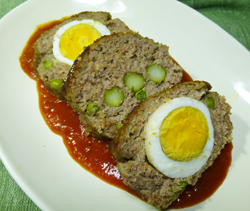

スコッチエッグ風の
ミートローフ
ミートローフ
- 調理時間：60 分
- （一人当たり）
- カロリー：484kcal
- たんぱく質：30.8g
- 脂質：21.0g
- 塩分：2.7g
＜２人分＞
タネ
- ・あいびき肉
- 150g
- ・タマネギ
- 1/2個
- ・ニンジン
- 40g
- ・マイタケ
- 2枚
- ・グリンピース（ゆで）
- 大さじ2
- ・パン粉
- 大さじ2
- ・牛乳
- 大さじ1
- ・塩
- 小さじ1/2
- ・コショウ
- 少々
- 卵
- 2個
- アスパラガス
- 2本
- 片栗粉
- 適量
- ・トマト
- 2個
- ・タマネギ（みじん切り）
- 1/6個
- ・トマトケチャップ
- 大さじ2
- ・ウスターソース
- 大さじ1
- ・小麦粉
- 大さじ1
- ・砂糖
- 大さじ1
- ・塩、コショウ
- 少々
トマトソース
- タネをつくる
１. タマネギ、ニンジン、マイタケはみじん切りにした後、フライパンで炒め、塩コショウで下味をつけて冷ましておく。
２. パン粉は牛乳に浸しておく。
３. ボウルにあいびき肉をいれて塩を加えて粘りが出るまでよく練り、タマネギ、ニンジン、マイタケ、グリンピース、牛乳に浸したパン粉、コショウを加えてさらに練り合わせる。 - アスパラガスはサッと湯がいて1/3等分に切る。かた茹で卵をつくり、殻をむいて片栗粉を表面にまぶす。
- オーブンシートを敷いたパウンド型の1/3の高さまでタネを詰める。
茹で卵とアスパラガスを並べて、すこし押さえる。残りのタネを全て詰める。表面を丁寧に平らにすると仕上がりがキレイになる。 - 200度に予熱したオーブンで30～40分程度焼く。竹串をさしてみて、透明な肉汁であれば完成。赤く濁った肉汁ならもう少し、焼く。焼きあがれば、食べやすい大きさにカットする。
- トマトソースをつくる
１. フライパンでみじん切りにしたタマネギをよく炒め、小麦粉を加えてさらに炒める。
２. ザク切りにしたトマトを加えて煮詰め、とろみがついてきたら砂糖、トマトケチャップ、ウスターソース、塩、コショウを加えて味をととのえる。 - お皿にトマトソースをしき、カットしたミートローフを並べて出来上がり。
スコッチエッグ風のミートローフ
ビタミンの補給というと、野菜やフルーツをイメージしがちですが、実は多くのビタミンは動物性食品にも含まれています。今回のレシピは幅広い年齢層に喜ばれるひき肉料理。スタートの春！しっかりとたんぱく質を摂って体力を落とさないようにしましょう。
豚肉には、ビタミン、ミネラルが豊富に含まれていますが、なかでも、ビタミンB1に注目。ビタミンB1は、糖質がエネルギーに変換されるのを手伝う優秀なビタミンです。ですから、ビタミンB1が不足すると体内で糖化現象が起こり倦怠感、集中力低下といった症状が起こりやすくなります。
牛肉に含まれるビタミンB12は美容ビタミンといわれており、肌荒れや顔色をよくする効果があります。その他、ヘム鉄という鉄分が豊富で貧血予防も期待できます。たっぷりの野菜とともにいただきましょう。